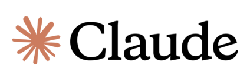

About ReviewAid.
ReviewAid is an open-source AI-driven tool designed to streamline full-text screening and data extraction phases of systematic reviews. It leverages advanced large language models to classify papers based on PICO criteria and extract custom data fields, drastically reducing manual workload for researchers.
ReviewAid is not intended to replace manual screening and data extraction. Rather, it is designed to function as an independent supplementary reviewer, helping to minimize human error and enhance the overall precision, consistency, and reliability of the research process. Want more details / documentation about ReviewAid? Please visit aurumz-rgb.github.io/ReviewAid/ or Github Repository.
If the primary ReviewAid streamlit is experiencing high usage, resource saturation, or memory limitations, users may utilize available mirror versions of ReviewAid without restriction.
Key Features
1. Full-text PICO Screening
AI-based PICO specified inclusion/exclusion classification
2. Full-text Data Extraction
Custom field extraction from text
3. Batch Processing
Process up to 20 papers at once
4. Multiple Exports
Export CSV, Excel, and Word formats
5. Live Terminal
Real-time processing logs to ensure transparency
6. Confidence Scoring
Estimates reliability of extraction to guide researchers to trust/not trust
7. Configuration
Configure any AI model using API key
8. Use
Runs locally/online, highly reusable
9. Open-source
Made by Researchers to ensure no proprietary "black box"
Confidence Scoring System
This layered approach ensures that high-confidence decisions are automated safely, while ambiguous or unreliable cases are clearly flagged for human oversight.
| Confidence Score | Classification | Description | Implication |
|---|---|---|---|
| 1.0 (100%) | Definitive Match | Deterministic rule-based classification / No ambiguity. | Fully automated decision |
| 0.8 – 1.0 | Very High | AI strongly validates the decision using explicit textual evidence. | Safe to accept |
| 0.6 – 0.79 | High | Criteria appear satisfied based on standard academic structure and content. | Review optional |
| 0.4 – 0.59 | Moderate | Ambiguous context or loosely met criteria. | Manual verification recommended |
| 0.1 – 0.39 | Low | Based mainly on heuristic keyword estimation. | High risk of error |
| < 0.1 | Unreliable | Derived from fallback or failed extraction methods. | Mandatory manual review |
Configuration




ReviewAid also supports configuration of OpenAI, Claude, Deepseek, Cohere, Z.ai and Ollama (locally) via API key as well. To protect your privacy, API keys are not stored at any time.
For tested tasks, the following models were successful:
OpenAI – GPT-4o
Deepseek – deepseek-chat
Cohere – command-a-03-2025
Z.AI – GLM-4.6V-Flash, GLM-4.5V-Flash
Anthropic – Claude-Sonnet-4-20250514
Ollama (local) – Llama3
Default – GLM-4.6V-Flash
Acknowledgements

I gratefully acknowledge developers of GLM-4.6V-Flash (Z.ai) for providing the AI model used in ReviewAid.
The visual and text-based reasoning capabilities of GLM-4.6V-Flash have greatly enhanced ReviewAid's full-text screening and data extraction workflows.
For more information, please see GLM-4.6V-Flash paper and GLM-4.6V-Flash Hugging Face.
I would also like to thank Mohith Balakrishnan for his thorough validation of ReviewAid, including batch testing, error checks, and confidence verification, which significantly improved the tool's reliability and accuracy.
Citation
For ReviewAid's preprint paper, please check ReviewAid MetaArXiV.
If you use ReviewAid in your research, please cite it using the following format: